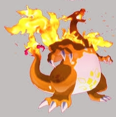
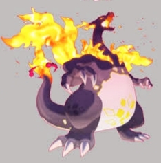

What Is Gigantamax Charizard?
Gigantamax Charizard is one of the most popular Max Battle bosses thanks to its iconic appearance and powerful Fire-type attacks. When Charizard Gigantamaxes, it grows to an enormous size and gains access to G-Max Wildfire, a unique move that can put constant pressure on raid groups throughout the battle.
Unlike standard raids, Gigantamax encounters are designed around teamwork. The boss has a large health pool, hits hard, and often requires multiple trainers working together with properly prepared counters.
Typing and Weaknesses
Gigantamax Charizard retains its Fire and Flying typing, which gives it several useful resistances but also one major weakness that raid groups can take advantage of.
- Type: Fire / Flying
- Weak to: Rock, Water, and Electric attacks
- Most important weakness: Rock-type moves deal massive damage and are usually the best option available.
Why Trainers Raid Gigantamax Charizard
There are several reasons why Gigantamax Charizard remains a highly sought-after raid boss. Its limited availability, potential shiny encounter, and strong collector appeal make it a popular target whenever it returns to the game.
- Chance to obtain the Gigantamax form
- Opportunity to hunt for a shiny Charizard
- Exclusive event rewards and bonus items
- One of the franchise's most recognizable Pokémon
How Difficult Is the Raid?
Gigantamax Charizard is considered a challenging group encounter. Smaller groups with optimized teams can succeed, but most trainers will have a much easier time with a larger lobby.
- Experienced players: Around 5–7 trainers
- Average groups: Around 8–12 trainers
- Comfortable clear: 12 or more trainers
Recommended Counters
Rock-type attackers are generally the strongest choice because of Charizard's severe weakness to Rock moves. Water-types also perform well, especially when boosted by rainy weather.
Strong Rock-type options:
- Dynamax Omastar
- Dynamax Gigalith
- Dynamax Kabutops
Strong Water-type options:
- Gigantamax Blastoise
- Gigantamax Kingler
- Gigantamax Inteleon
Weather Effects
Weather can have a noticeable impact on raid difficulty. Rainy and Partly Cloudy conditions generally favor raiders, while Sunny weather strengthens Charizard's Fire-type attacks.
- Rainy: Boosts Water-type counters
- Partly Cloudy: Boosts Rock-type damage
- Sunny: Increases Charizard's Fire-type damage output
Final Overview
Whether you're collecting Gigantamax Pokémon, hunting a shiny, or simply looking for a challenging group battle, Gigantamax Charizard is one of the most rewarding raid bosses to take on. Bringing strong Rock-type counters and coordinating with other trainers will make the battle significantly easier and improve your chances of securing a high-quality catch.
Is Gigantamax Charizard Worth Raiding?
Gigantamax Charizard is one of the most popular raid bosses thanks to its iconic design, limited-time availability, and the chance to catch a shiny version. Whether it's worth your raid passes depends on what you're looking for.
Reasons to Raid Gigantamax Charizard
- Excellent collector's Pokémon: Gigantamax forms are only available during special events, making them valuable additions to any collection.
- Shiny potential: Shiny Gigantamax Charizard is one of the most sought-after variants in Pokémon GO because of its distinctive black coloration.
- Event-exclusive content: Missing the event could mean waiting months before Charizard returns to raid rotations.
- Useful rewards: Raiding provides XP, Candy, XL Candy, and other event bonuses that can help strengthen your Fire-type roster.
When You Might Skip It
- If your goal is only maximum raid efficiency, there are situations where other Fire-type attackers can provide higher damage output.
- Gigantamax raids usually require coordinated groups, which may be difficult for players in areas with smaller communities.
- Newer trainers may struggle if they don't have strong Rock-type or Water-type counters prepared.
Final Verdict
For collectors, shiny hunters, and players who enjoy special raid events, Gigantamax Charizard is definitely worth raiding. Competitive players focused purely on damage rankings may find stronger alternatives, but Charizard remains one of the most rewarding and enjoyable event bosses to add to your collection.
Gigantamax Charizard Raid Boss Overview
Gigantamax Charizard is a special event raid boss that appears during selected Max Battle events. Its Fire/Flying typing gives it a major weakness to Rock-type attacks, making Rock-type Pokémon some of the most effective counters available.
Raid Information
- Type: Fire / Flying
- Encounter Type: Gigantamax Raid Boss
- Availability: Limited-time events
- Shiny Available: Event dependent
Key Weaknesses
- Rock (4× weakness)
- Water
- Electric
Recommended Group Size
| Group Type | Recommended Players |
|---|---|
| Experienced Trainers | 5–7 |
| Mixed-Level Group | 8–12 |
| Public Lobby | 12+ |
What to Expect
- Powerful Fire-type attacks.
- Longer battles than standard raid encounters.
- Greater emphasis on team coordination.
- Strong Rock-type counters can significantly improve success rates.
Typing, Weaknesses & Resistances – Gigantamax Charizard
Gigantamax Charizard retains its Fire/Flying typing. This combination gives it several useful resistances, but it also leaves it extremely vulnerable to Rock-type attacks.
Typing
- Type: Fire / Flying
Weaknesses
Double Weakness (4× Damage)
- Rock
Rock-type attacks are the most effective option against Gigantamax Charizard and are usually the first choice when building a raid team.
Standard Weaknesses
- Water
- Electric
Resistances
- Fire
- Grass
- Fighting
- Bug
- Fairy
Ground-Type Immunity
Because of its Flying typing, Charizard is immune to Ground-type attacks in the main series games.
Type Matchup Summary
| Category | Types |
|---|---|
| 4× Weakness | Rock |
| Weaknesses | Water, Electric |
| Resistances | Fire, Grass, Fighting, Bug, Fairy |
| Immunity | Ground* |
*Applies to the main series games because of Charizard's Flying typing.
Raid Tips
- Rock-type attackers should be your top priority.
- Water-type Pokémon are strong alternatives.
- Electric-type attackers can also contribute useful damage.
- Avoid relying on Grass-, Bug-, or Fire-type attackers.
Best Counters for Gigantamax Charizard
Gigantamax Charizard is especially vulnerable to Rock-type attacks, making Rock-type Pokémon some of the strongest choices for this battle. Water- and Electric-type attackers can also perform well when properly powered up.
Recommended Counters
Gigantamax Inteleon
- Strong Water-type attacker.
- Can take advantage of Charizard's Fire typing.
- Useful in both small and large raid groups.
Gigantamax Blastoise
- Reliable Water-type option.
- Offers a good balance of offense and durability.
- Works particularly well during Rainy weather.
Gigantamax Toxtricity
- Provides Electric-type damage.
- Can contribute consistent damage throughout the battle.
- Useful if Rock- and Water-type options are limited.
Dynamax Omastar
- One of the strongest Rock-type choices against Charizard.
- Takes advantage of Charizard's double weakness to Rock-type attacks.
- A valuable addition to most raid teams.
Dynamax Gigalith
- Solid Rock-type attacker.
- Capable of dealing strong super-effective damage.
- Good alternative if Omastar is unavailable.
Dynamax Zapdos
- Provides Electric-type coverage.
- Can help supplement Rock- and Water-type teams.
Best Types to Use
- Rock: The most effective option against Charizard.
- Water: Reliable and widely available.
- Electric: Useful secondary choice.
Raid Tips
- Prioritize Rock-type attackers whenever possible.
- Build backup teams before entering the battle.
- Take advantage of Rainy or Partly Cloudy weather if available.
- Avoid using Pokémon that are weak to Fire-type attacks.
Gigantamax Charizard Moveset Guide
The moves Charizard uses during a Gigantamax battle can influence how challenging the encounter feels. Fire-type attacks are usually the biggest threat, especially when boosted by weather.
Fast Moves
Fire Spin
- Type: Fire
- One of Charizard's most common fast moves.
- Deals steady Fire-type damage throughout the battle.
- Becomes more threatening during Sunny weather.
Air Slash
- Type: Flying
- Provides Flying-type coverage.
- Can be more troublesome for Grass- and Fighting-type Pokémon.
- Generally less threatening than Fire Spin.
Charged Moves
Overheat
- Type: Fire
- One of Charizard's strongest Fire-type attacks.
- Capable of dealing significant damage if not anticipated.
Dragon Claw
- Type: Dragon
- Lower damage than Overheat.
- Can be used more frequently during battle.
Blast Burn
- Type: Fire
- One of Charizard's most powerful attacks.
- Particularly dangerous when weather boosted.
- Can quickly knock out Pokémon that are weak to Fire-type damage.
Gigantamax Move
G-Max Wildfire
- Type: Fire
- Exclusive to Gigantamax Charizard.
- One of the defining features of the Gigantamax form.
- Helps distinguish Gigantamax Charizard from standard Charizard encounters.
Moveset Overview
| Move | Type | Category |
|---|---|---|
| Fire Spin | Fire | Fast Move |
| Air Slash | Flying | Fast Move |
| Overheat | Fire | Charged Move |
| Dragon Claw | Dragon | Charged Move |
| Blast Burn | Fire | Charged Move |
| G-Max Wildfire | Fire | Gigantamax Move |
Raid Tips
- Rock-type attackers remain the most effective option against Charizard.
- Water-type Pokémon can also perform well, especially during Rainy weather.
- Be prepared for powerful Fire-type attacks when building your team.
- Having backup battle teams can make longer encounters easier to manage.
Weather Boost – Gigantamax Charizard
Weather can affect both Gigantamax Charizard and the Pokémon used against it. Depending on the conditions, some counters may perform better while Charizard's attacks become more powerful.
Sunny Weather
- Boosts Fire-type moves.
- Charizard's Fire-type attacks deal more damage.
- Trainers may notice increased pressure from moves such as Fire Spin, Overheat, or Blast Burn.
Rainy Weather
- Boosts Water-type attacks.
- Water-type counters become more effective.
- Can help Pokémon such as Gigantamax Blastoise, Gigantamax Inteleon, and Gigantamax Kingler deal additional damage.
Partly Cloudy Weather
- Boosts Rock-type attacks.
- Rock-type counters benefit the most from these conditions.
- Useful for trainers relying on Pokémon such as Dynamax Omastar, Dynamax Gigalith, or Dynamax Kabutops.
Windy Weather
- Boosts Flying-type moves.
- Charizard's Flying-type attacks become stronger.
- Dragon-type Pokémon also receive a weather boost.
Weather Summary
| Weather | Primary Effect |
|---|---|
| Sunny | Boosts Charizard's Fire-type attacks |
| Rainy | Boosts Water-type counters |
| Partly Cloudy | Boosts Rock-type counters |
| Windy | Boosts Flying-type attacks and Dragon-types |
Raid Tip
If weather conditions are favorable for your counters, you may find the battle more manageable. Rock- and Water-type attackers are often the most useful choices against Gigantamax Charizard.
Gigantamax Charizard Catch CP
After defeating Gigantamax Charizard, the CP of the encounter depends on whether it was weather boosted. Higher CP values generally indicate stronger IVs.
CP Range
Without Weather Boost
- Typical CP range: approximately 1,650–1,720 CP
- 100% IV Charizard appears at the top end of the range
Weather Boosted (Sunny Weather)
- Typical CP range: approximately 2,060–2,150 CP
- 100% IV Charizard appears at the highest CP value
Perfect IV CP
| Condition | 100% IV CP |
|---|---|
| No Weather Boost | ~1,720 CP |
| Sunny Weather Boost | ~2,150 CP |
What Affects Catch CP?
- Individual Values (IVs)
- Weather boost during the raid
- The level of the Pokémon received after the encounter
Should You Keep a High-CP Charizard?
A high-CP catch can save resources when powering up Charizard later. However, checking the Pokémon's IVs is still recommended before investing Stardust and Candy.
Gigantamax Charizard Shiny Comparison
Shiny Gigantamax Charizard is one of the most sought-after forms of Charizard due to its distinctive appearance. While it performs exactly the same in battle as the standard version, many trainers consider it one of the most visually impressive shiny Pokémon.
Normal vs Shiny Gigantamax Charizard
| Feature | Gigantamax Charizard | Shiny Gigantamax Charizard |
|---|---|---|
| Body Color | Orange | Black |
| Wing Interior | Blue | Darker tones |
| Overall Appearance | Classic Charizard design | Darker color scheme |
| Battle Performance | Standard | Identical |
How Rare Is the Shiny?
Shiny Gigantamax Charizard is only available when shiny encounters are enabled during specific events. If the shiny form is not active during an event, trainers will not be able to encounter it regardless of how many raids they complete.
- Availability depends on event settings.
- Not guaranteed from every raid encounter.
- Often becomes a popular target during special raid events.
Does the Shiny Have Better Stats?
No. Shiny Gigantamax Charizard has the same stats, moves, and battle performance as the standard version. The difference is entirely cosmetic.
Why Is It Popular?
- The black shiny coloration is noticeably different from the standard form.
- Charizard is one of the franchise's most popular Pokémon.
- Many collectors aim to obtain both the normal and shiny Gigantamax versions.
- The form is only available during select events.

Gigantamax Charizard

Shiny Gigantamax Charizard
Gigantamax Charizard Raid Strategy
Gigantamax Charizard can be a challenging opponent because of its powerful Fire-type attacks and high durability. Bringing the right counters and joining a well-sized group will greatly improve your chances of success.
Choose the Right Counters
Rock-type Pokémon are generally the best option because Charizard is especially vulnerable to Rock-type attacks.
Recommended choices include:
- Dynamax Omastar
- Dynamax Gigalith
- Gigantamax Blastoise
- Gigantamax Inteleon
- Dynamax Zapdos
- Gigantamax Toxtricity
If you do not have strong Rock-type attackers, Water- and Electric-type Pokémon can still contribute useful damage.
Check the Weather
- Rainy Weather: Helps Water-type counters.
- Partly Cloudy Weather: Boosts Rock-type attacks.
- Sunny Weather: Strengthens Charizard's Fire-type moves.
Partly Cloudy conditions are usually the most favorable for trainers using Rock-type teams.
During the Battle
- Lead with your strongest counters.
- Have a second battle team prepared in advance.
- Rejoin the battle quickly if your team faints.
- Keep dealing damage whenever possible rather than spending too much time dodging.
Group Size Recommendations
- Smaller groups should use well-powered counters and coordinate carefully.
- Medium-sized groups generally have a more comfortable experience.
- Larger groups can complete the raid much more consistently.
Quick Tips
- Prioritize Rock-type attackers whenever possible.
- Avoid using underleveled Pokémon.
- Build backup teams before the raid begins.
- Take advantage of favorable weather boosts when available.
Strategy Summary
The simplest approach is to build a team around strong Rock-type attackers, join a sufficiently large group, and keep your strongest Pokémon in the battle as much as possible. Good preparation is often more important than advanced tactics.
Gigantamax Mechanics Explained
Gigantamax is a special transformation that changes a Pokémon's appearance and grants access to a unique G-Max move. In Pokémon GO, Gigantamax Pokémon are typically featured in special Max Battle events and require groups of trainers to defeat.
What Makes Gigantamax Different?
- Pokémon take on a unique Gigantamax appearance.
- Each Gigantamax Pokémon has its own signature G-Max move.
- Gigantamax encounters are generally more challenging than standard raids.
- These forms are usually available only during specific events.
Gigantamax Charizard's Signature Move
Gigantamax Charizard uses G-Max Wildfire, a special Fire-type attack associated with its Gigantamax form.
- Exclusive to Gigantamax Charizard.
- One of the defining features of the transformation.
- Visually distinct from Charizard's standard attacks.
How Max Battles Work
Gigantamax Charizard is designed to be challenged by groups of trainers working together. Because of its high durability and powerful attacks, larger groups generally have a much easier time completing the battle.
- Team coordination is important.
- Strong counters can significantly reduce battle difficulty.
- Multiple battle teams may be needed during longer encounters.
Gigantamax vs Other Transformations
| Feature | Mega Evolution | Dynamax | Gigantamax |
|---|---|---|---|
| Appearance Change | Yes | Size increase | Unique form |
| Special Move | No | Max Moves | G-Max Moves |
| Battle Focus | Stat enhancement | Max Battle mechanics | Unique form and G-Max move |
Why Trainers Want Gigantamax Charizard
- Unique appearance.
- Exclusive event availability.
- Popular Pokémon with a distinctive Gigantamax design.
- Opportunity to collect both standard and shiny versions.
Dangerous Moves – Gigantamax Charizard
Gigantamax Charizard can put constant pressure on raid groups thanks to its powerful Fire-type attacks and strong charged moves. Knowing which attacks are the biggest threats can help you choose better counters and avoid unnecessary knockouts.
Blast Burn
Blast Burn is usually the move players fear most when facing Charizard.
- Delivers massive Fire-type damage in a single hit.
- Can quickly remove fragile attackers from the battle.
- Becomes even more threatening when Fire-type attacks are weather boosted.
If Charizard is running Blast Burn, strong Rock-type Pokémon become even more valuable because they can take advantage of its double weakness while resisting some incoming pressure.
Overheat
Overheat is another heavy-hitting Fire-type attack capable of punishing teams that rely on glass-cannon attackers.
- Hits extremely hard when it lands.
- Can knock out weakened counters instantly.
- Often forces players into earlier relobbies.
Dragon Claw
While Dragon Claw is less explosive than Charizard's Fire-type moves, it can still be annoying because of how frequently it may appear.
- Charges quickly.
- Keeps constant pressure on the raid group.
- Can gradually wear down teams during longer battles.
Fast Move Pressure
Fire Spin
- Provides steady Fire-type damage throughout the battle.
- Helps Charizard build energy for stronger charged attacks.
- Can slowly chip away at attackers that stay on the field too long.
Air Slash
- Flying-type fast move with reliable damage output.
- Can punish Grass-type counters especially hard.
- Contributes to Charizard's overall raid pressure.
What Makes Charizard Dangerous?
- Its attacks are backed by a large raid boss health pool.
- Strong Fire-type moves can quickly remove weaker counters.
- Charged moves often arrive when players are already dealing with constant fast-move damage.
- Sunny weather can significantly increase Fire-type damage output.
Danger Summary
| Move | Type | Threat Level |
|---|---|---|
| Blast Burn | Fire | Very High |
| Overheat | Fire | High |
| Dragon Claw | Dragon | Moderate |
| Fire Spin | Fire | Moderate |
| Air Slash | Flying | Moderate |
Tips for Surviving Longer
- Use strong Rock-type counters whenever possible.
- Keep backup teams ready for quick relobbies.
- Pay attention to weather conditions before starting the raid.
- Avoid relying entirely on fragile attackers.
- Join larger groups if your counter lineup is not fully powered up.
Common Raid Mistakes – Gigantamax Charizard
Many Gigantamax Charizard raid failures happen before the battle even starts. Poor team selection, weak counters, and a lack of coordination can quickly turn a manageable raid into a frustrating loss.
Ignoring Charizard's Double Rock Weakness
The biggest mistake is bringing Pokémon that deal only neutral damage when Charizard has a major weakness to Rock-type attacks.
- Teams filled with random high-CP Pokémon often struggle to contribute meaningful damage.
- Grass, Bug, and Fighting-type attackers generally perform poorly in this matchup.
- Rock-type attackers can dramatically reduce the raid's difficulty.
Pokémon such as Dynamax Omastar and Dynamax Gigalith are often among the safest choices when available.
Entering With Too Few Trainers
Many players underestimate how much health Gigantamax bosses have compared to standard raids.
- Small groups may run out of time even if they survive.
- A few underpowered accounts can make a noticeable difference.
- Public lobbies tend to succeed more consistently with larger groups.
If your team lacks optimized counters, bringing extra players is usually the easiest solution.
Spending Too Much Time Out of Battle
Damage stops whenever trainers are reviving Pokémon or rebuilding teams.
- Slow relobbies reduce overall raid damage.
- Multiple players fainting at the same time can create large damage gaps.
- Prepared battle parties help trainers return to the fight faster.
Overlooking Weather Conditions
Weather can change how difficult a raid feels.
- Sunny weather strengthens Fire-type attacks and can make Charizard more threatening.
- Weather that boosts your counters may shorten the battle considerably.
- Checking conditions before a raid can help with team planning.
Focusing Only on Bulk
Survivability is important, but raids are still a race against the clock.
- Extremely defensive Pokémon often contribute less total damage.
- A balanced team of strong attackers usually performs better than a team built entirely around tanking hits.
- Efficient damage output is often more valuable than surviving a few extra seconds.
Forgetting About Charged Moves
Charizard's strongest attacks can quickly remove fragile counters from the field.
- Repeated charged moves can force frequent relobbies.
- Glass-cannon attackers may require more careful management.
- Having a backup team ready helps maintain momentum.
Quick Summary
| Mistake | How Much It Hurts |
|---|---|
| Using poor counters | Critical |
| Too few players | Critical |
| Slow relobbies | High |
| Ignoring weather | Moderate |
| Low overall DPS | High |
| Poor charged move management | Moderate |
Most successful groups keep things simple: bring strong Rock-type attackers, join with enough trainers, and spend as much time as possible actively dealing damage.
PvP, PvE, Raid, Gym & Cup Usage – Gigantamax Charizard
Gigantamax Charizard is built primarily for Max Battles and special event raids. Unlike regular Charizard or its Mega Evolutions, its role is focused on limited-time Gigantamax content rather than everyday gameplay.
PvP
Gigantamax Charizard cannot be used in standard PvP formats.
- Not eligible for Great League, Ultra League, or Master League
- Unavailable in most competitive battle formats
- No role in seasonal PvP cups
PvE
Outside of Gigantamax events, its practical use is limited.
- Charizard itself remains a solid Fire-type attacker
- Mega Charizard Y is generally the preferred option for raid damage
- Gigantamax Charizard is valued more for its event-exclusive status than long-term PvE impact
Raids
This is where Gigantamax Charizard shines.
- Designed specifically for large-group Max Battles
- Can put significant pressure on unprepared teams
- Rewards coordinated groups with a memorable raid experience
Strengths
- Strong Fire-type offensive presence
- Popular raid target due to its iconic status
- Often featured in high-interest community events
Challenges
- Requires multiple trainers for reliable clears
- Rock-type attackers can exploit its double weakness
- Availability is limited to specific events
Gyms
Gigantamax Charizard has no special role in gym battles.
- Gigantamax mechanics are restricted to Max Battle content
- Cannot be used as a Gigantamax gym defender
- Provides no unique gym advantages
Cups & Special Formats
Gigantamax Charizard is not eligible for standard PvP cup competitions.
- Not available in restricted cup formats
- No impact on seasonal competitive metas
Mode Breakdown
| Mode | Overall Value |
|---|---|
| Raids | Excellent |
| PvE | Limited |
| Gyms | Not Applicable |
| PvP | Not Eligible |
| Cups | Not Eligible |
Final Takeaway
- Raids: The main reason to battle Gigantamax Charizard.
- Collection Value: High thanks to its rarity and event exclusivity.
- PvE: Overshadowed by Mega Charizard for most practical uses.
- PvP & Cups: Not available in competitive formats.
- Overall: A popular and rewarding raid target, especially for collectors and event-focused players.
Evolution & Mega Potential – Gigantamax Charizard
Charizard is one of the few Pokémon with access to both Mega Evolution and Gigantamax forms. While both transformations make Charizard more powerful, they serve very different purposes in Pokémon GO and the main series games.
Evolution Line
Charizard is the final stage of the classic Kanto Fire-type starter family:
- Charmander → Charmeleon → Charizard
Once Charizard is obtained, it can gain access to special transformations during certain events or battle formats.
Gigantamax Charizard
- Exclusive transformation available during Gigantamax battles
- Features a unique appearance with flames flowing from its body and wings
- Uses the signature move G-Max Wildfire
- Primarily associated with Max Battles and limited-time events
Gigantamax Charizard is valued mainly for its rarity, event significance, and unique battle mechanics.
Mega Evolution Potential
Mega Charizard X
- Changes typing from Fire/Flying to Fire/Dragon
- Gains improved offensive power and different matchup coverage
- Popular for both raids and certain PvP formats
Mega Charizard Y
- Retains its Fire/Flying typing
- Offers exceptional Fire-type damage output
- Among the strongest Fire-type Mega Pokémon for raid battles
Gigantamax vs Mega Evolution
| Feature | Gigantamax Charizard | Mega Charizard X/Y |
|---|---|---|
| Purpose | Special Max Battle form | Player-controlled power boost |
| Availability | Limited-time Gigantamax events | Mega Evolution using Mega Energy |
| Battle Focus | Unique G-Max mechanics | Higher combat performance |
| Raid Value | Event-focused | Strong offensive option |
| PvP Eligibility | Not used in PvP | Can be used in eligible formats |
| Collector Appeal | Very high | High |
When Each Form Shines
Mega Charizard is generally the better choice when your goal is maximizing damage output in raids or strengthening your team.
Gigantamax Charizard is most valuable during special Max Battle events, for collectors, and for players who enjoy unique raid encounters.
Final Thoughts
- Mega Charizard focuses on battle performance and long-term usefulness.
- Gigantamax Charizard focuses on exclusive events, unique mechanics, and collection value.
- Both forms are popular, but they appeal to different types of players.
Stats Breakdown – Gigantamax Charizard
Gigantamax Charizard functions as a raid boss rather than a standard Pokémon encounter. Its battle performance comes from raid scaling and powerful Fire-type attacks, making it a significant threat during Max Battle events.
Battle Characteristics
- Strong offensive presence through Fire- and Flying-type attacks.
- Large health pool designed for group encounters.
- Capable of putting sustained pressure on teams that lack proper counters.
- Benefits greatly from weather conditions that strengthen Fire-type moves.
Attack Profile
Charizard's threat level is largely determined by its moveset.
- Fire Spin: Consistent Fire-type damage and energy generation.
- Air Slash: Reliable Flying-type fast move.
- Overheat: Heavy burst damage capable of punishing weaker teams.
- Blast Burn: One of Charizard's strongest Fire-type attacks when available.
- Dragon Claw: Fast coverage move that can maintain pressure throughout a battle.
Survivability
Although Charizard is not known for exceptional defensive stats in normal gameplay, raid scaling allows Gigantamax Charizard to remain on the field long enough to challenge larger groups of trainers.
- Can withstand significant damage during coordinated raids.
- Requires effective Rock- and Water-type counters for efficient clears.
- Poor counter selection can noticeably increase battle time.
What This Means for Raiders
Gigantamax Charizard is primarily an offensive raid boss. Most groups will find success by focusing on strong type advantages and maintaining consistent damage rather than trying to outlast the encounter.
Players Required for Gigantamax Charizard Raids
Gigantamax Charizard is intended for group play, and the number of trainers needed can vary depending on counter quality, weather conditions, and overall team coordination.
Small Coordinated Groups
Experienced trainers with strong Rock- and Water-type teams may be able to complete the raid with a relatively small group.
- Around 5–7 well-prepared players can succeed.
- Success depends heavily on optimized counters and active participation from everyone.
- Mistakes or weak teams can quickly increase the challenge.
Typical Raid Groups
Most groups will find the raid much more manageable with additional trainers.
- 8–12 players is a practical target for most communities.
- Allows for team wipes, relobbies, and less-than-perfect counters.
- Works well for a mix of casual and experienced players.
Large Event Lobbies
- 12–20 players can defeat Gigantamax Charizard comfortably.
- Battles tend to finish faster with fewer recovery interruptions.
- Ideal during community meetups and special event hours.
Factors That Influence Difficulty
Counter Selection
- Strong Rock-type attackers can significantly reduce the number of trainers required.
- Using off-type or underpowered Pokémon often increases battle time and risk.
Weather Conditions
- Weather that strengthens your counters can make the battle easier.
- Conditions that benefit Charizard may increase overall difficulty.
Trainer Experience
- Coordinated groups generally need fewer players.
- Public lobbies with mixed team quality often benefit from larger numbers.
General Recommendation
For most players, joining a group of 8–12 trainers offers the best balance between reliability and efficiency, while larger event groups provide the smoothest overall experience.
FAQ – Gigantamax Charizard
Charizard Gigantamax form is one of the most asked-about raid bosses due to its rarity and difficulty. Here are the most common questions answered clearly.
Is Gigantamax Charizard worth using in battles?
Yes, but mainly for raid and event value. It is strong in Fire-type offense situations, but it is not the absolute top DPS Pokémon compared to other Fire attackers in the meta.
How hard is the Gigantamax Charizard raid?
It is considered a high-difficulty raid boss:
- Requires coordinated group play
- Recommended: 8–12 players for safe clears
- Harder for low-level or unprepared teams
What is Gigantamax Charizard weak against?
- Rock-type attacks
- Water-type attacks
- Electric-type attacks
Can Gigantamax Charizard be shiny?
Yes, but:
- Only during specific events
- Shiny rates are usually boosted during event windows
- It is still rare even during availability
When does it appear?
- Only during special Max Battle / Gigantamax events
- Not available in normal raids
- Returns periodically during limited-time rotations
Is it better than Mega Charizard?
Charizard Gigantamax form is different from Mega Evolution:
- Gigantamax = raid-exclusive, temporary form
- Mega Charizard = better for consistent PvE damage
How many players are needed?
- Minimum: 5–7 strong players
- Recommended: 8–12 average players
- Easy clear: 12+ casual players
Is it beginner-friendly?
Not really:
- Requires strong counters (Rock/Water types)
- Timing and coordination matter
- Better suited for mid-to-experienced players
Pokédex Information – Gigantamax Charizard
Charizard is a Fire/Flying-type Pokémon first introduced in Generation I as the final evolution of Charmander. In its Gigantamax form, it undergoes a dramatic visual transformation that reflects its increased fire energy during special Max Battle events.
Basic Details
- Pokédex No.: #006
- Type: Fire / Flying
- Category: Flame Pokémon
- Evolution Line: Charmander → Charmeleon → Charizard
- Gigantamax Availability: Event-exclusive form
Pokédex Description
When Gigantamaxed, Charizard’s internal fire energy becomes far more intense, giving it a more aggressive appearance and significantly amplifying the heat radiating from its body and wings.
Gigantamax Traits
- Fire energy becomes visibly larger and more unstable.
- Physical size increases significantly during battles.
- Access to exclusive G-Max Fire-based attacks in Max Battles.
- Designed for high offensive pressure in raid encounters.
Behavior and Traits
- Naturally produces intense body heat during flight.
- Uses its wings to control air currents and flames.
- Becomes more aggressive in its Gigantamax state.
- Fire output increases during prolonged battles.
Forms Overview
- Standard Charizard: Balanced Fire/Flying attacker.
- Mega Charizard: High-performance raid attacker with X/Y specialization.
- Gigantamax Charizard: Event-based form focused on Max Battle mechanics.
Comparison – Gigantamax Charizard vs Other Raid Options
Gigantamax Charizard is often compared with other Kanto Gigantamax Pokémon and popular Fire-type attackers. Its value depends more on context—event raids and team composition—than raw dominance in every situation.
Compared to Gigantamax Venusaur
Venusaur and Charizard represent two very different raid styles. Charizard focuses on burst damage, while Venusaur plays more defensively with sustained pressure.
- Charizard deals higher immediate Fire-type damage but is more vulnerable to Rock-type attacks.
- Venusaur survives longer and applies steadier pressure through bulk and status effects.
- In most raid scenarios, Charizard feels more aggressive while Venusaur is more stable.
Compared to Gigantamax Blastoise
Blastoise is the defensive counterpart in the Kanto trio, making this matchup more about speed versus durability.
- Charizard focuses on fast raid pressure and offensive output.
- Blastoise is slower but significantly tankier in longer fights.
- Charizard is generally harder to manage due to burst damage spikes.
Mega Charizard vs Gigantamax Charizard
These two forms serve completely different purposes. Mega Charizard is a consistent attacker, while Gigantamax Charizard is tied to special raid events.
- Mega Charizard is more reliable for daily raid use.
- Gigantamax Charizard is limited to event windows.
- Mega form is better for long-term PvE efficiency.
Against Other Fire-Type Raid Attackers
Within Fire-type attackers, Charizard remains popular but not always the highest damage option.
- Some Gigantamax Fire-types offer higher sustained DPS.
- Others specialize in burst damage or tanking roles.
- Charizard’s main strength is balance and accessibility during events.
Overall Position
Gigantamax Charizard sits in a balanced tier: not the absolute strongest Fire attacker, but still highly valuable due to its event exclusivity, popularity, and reliable raid performance during its availability window.
Events & Availability – Gigantamax Charizard
Gigantamax Charizard is not available in regular raid rotations. It only appears during limited-time Max Battle events, making it one of the more exclusive Gigantamax encounters in Pokémon GO-style gameplay.
When It Appears
Charizard is usually featured during special event rotations that focus on Gigantamax or Kanto-themed Pokémon.
- Featured during Max Battle events and themed raid weekends.
- Often appears alongside other Kanto Gigantamax Pokémon such as Venusaur, Blastoise, and Gengar.
- Available only within specific event time windows.
Event Structure
When Gigantamax Charizard is active, it typically follows a short event format where raids are available for a limited duration at designated locations.
- Short event windows (usually a few hours).
- Increased raid activity at Power Spots or designated locations.
- Higher participation encouraged through community play.
Return Frequency
- Does not appear in standard raid rotations.
- Returns during special Max Battle or themed events.
- Availability depends on event scheduling by Pokémon GO.
Shiny Availability
- Shiny Charizard Gigantamax may be available during select events.
- Shiny odds are typically boosted during featured raid periods.
- Availability is not guaranteed every time it returns.
Conclusion – Gigantamax Charizard
Gigantamax Charizard is one of the most popular Max Battle bosses, mainly because of its iconic design and limited-time availability. While it can be useful in Fire-type raid teams, most trainers value it more for collection and event participation than strict raid performance.
Final Take
This raid is best approached as an event experience rather than a must-have competitive target. It rewards teamwork, coordination, and participation during its availability window.
- Good choice for collectors and event-focused players.
- Optional for players already strong in Fire-type raid attackers.
- Most rewarding for those who enjoy group Max Battles and shiny hunting.
Related Posts
You may also find these Pokémon GO raid guides helpful: